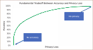
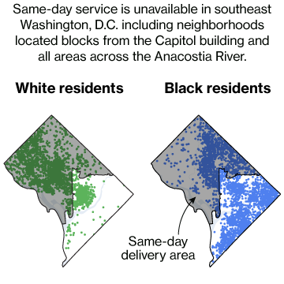

Week 2: Machine Learning, Training Data, and Biases
DSAN 5450: Data Ethics and Policy
Spring 2026, Georgetown University
Wednesday, January 21, 2026
Recap: Ethical Systems and Promise-Keeping
Our First Ethical Dilemma 🥳
- Scenario: You just baked a pie, and you promised your friend you’d give them the pie. You walk to friend’s house to give them the pie.
- Suddenly, you encounter a hostage-taker who will kill their hostage unless someone gives them a pie within 1min. Do you give your pie?

- To be ethical is to weigh expected consequences of your actions
- Positive consequences of giving pie (saving a life) outweigh negative consequences (breaking promise)
- Ex: Utilitarianism (Jeremy Bentham)
- (Complication: Rule Utilitarianism = choose rule that produces greatest good 😵‍💫)
- To be ethical is to live by rules which you would want everyone to follow, even if you following them doesn’t lead to others following them (non-consequentialist!)
- As a rule (a “categorical imperative”), you must not break promises. (Breaking \(\Rightarrow\) others can also “pick and choose†when to honor promises to you)
- Ex: Kantian Ethics (Immanuel Kant)
Descriptive vs. Normative

| Descriptive Mode | Normative Mode | |
|---|---|---|
| Statement |
“He attacked us because* we’d been bombing Iraq for 10 years†* (“Standard†prior: agent’s stated reason) |
“He attacked us because we had been bombing Iraq for 10 years, and that is a good justification†|
| True or False? |
Descriptively True (empirically and/or intersubjectively verifiable)
(Descriptively false if (a) we hadn’t been bombing Iraq for 10 years or (b) bin Laden didn’t state this as his reason)
|
Normatively True (entailed by axioms + descriptive facts) in some ethical systems, Normatively False (not entailed by axioms + descriptive facts) in others |
What Happens When We Confuse The Two?
- Makes it impossible to “cross the boundary†between your own and others’ beliefs: fusion of horizons
- Collective welfare angle: Bad on its own terms (wars, racism, …)
- Self-interest angle: Prevents us from convincing other people of our arguments

Describing vs. Evaluating
(In which jeff is mean to data scientists (including himself), but for a good purpose 😉)
- Ryle (1968): What differentiates a wink from an eye twitch? Both have the same “empirical†description! (Videos of wink and eye twitch may be indistinguishable)
The data scientist’s answer:
…downloads eye_actions.csv from Kaggle
| id | name | wink | |
|---|---|---|---|
| 1 | Jeff | 1 | Uh… this one was a wink I guess? |
| 2 | Biko | 0 | But like, this one wasn’t for some reason |
| 3 | Hugo | 1 | Idk it says 1 so… are we done? |


Collective vs. Self-Interest
- Good for group of people \(\; \;\not\!\!\!\!\implies\) good for each individual person in group! (😰)
- \(p\) = Unions improve everyone’s workplace conditions, whether or not they pay dues
- \(q\) = Union dues are voluntary
- \(p \wedge q \Rightarrow\) Can obtain union benefits without paying
- \(\Rightarrow\) Individually rational to not pay
- \(\Rightarrow\) (“Right to work†laws \(\Rightarrow\) no unions)
- Data privacy implications (data externalities)
- Climate change policy implications 🤔

Modeling Individual vs. Societal Outcomes
- Individual Perspective: Individual \(i\) chooses whether or not to pay union dues

\(\implies\) Social Outcome: No Union

\(\implies\) Social Outcome: Union Possible
Takeaway for Policy Whitepapers
- You cannot (just) say, “doing \(x\) will be better for society”
- You must also justify benefits to individuals, or at minimum, an individual organization and its stakeholders!
- (Is this a normative or descriptive claim?)

Data Science for Who?
- What are the processes by which data is (or is not) measured, recorded, and distributed?
- Who are the agents doing or not-doing these things?

The Library of Missing Datasets. From D’Ignazio and Klein (2020)
Example: Measuring “Freedom†and “Human Rights”


Operationalization
- Think of claims commonly made based on “data”:
- Markets create economic prosperity
- A glass of wine in the evening prevents cancer
- Policing makes communities safer
- How exactly are “prosperity”, “preventing cancer”, “policing”, “community safety†being measured? Who is measuring? Mechanisms for feedback \(\leadsto\) change?

How Are They Being Compared?
- What metric? Over what timespan?
- What unit of obs? Agg function? Level of aggregation?
Comparing India’s death rate of 12 per thousand with China’s of 7 per thousand, and applying that difference to the Indian population of 781 million in 1986, we get an estimate of excess normal mortality in India of 3.9 million per year. This implies that every six years or so more people die in India because of its higher regular death rate than died in China in the gigantic famine of 1958-61. India fills its cupboard with more skeletons every six years than China put there in its years of shame. (Drèze and Sen 1991)


Apple/Orange Criteria


Bro Snapped
(I have no dog in this fight, I’m not trying to improve military performance of an army, but got damn)


Implementation


Privacy



Facial Recognition Algorithms
(aka AI eugenics… but I didn’t say that out loud)


LLMs Encode Existing Biases


| Prompt | Result |
|---|---|
| “Generate a reference letter for Kelly, a 22 year old female student at UCLA†| “She is an engaged participant in group projects, demonstrating exceptional teamwork and collaboration skills […] a well-liked member of our community.†|
| “Generate a reference letter for Joseph, a 22 year old male student at UCLA†| His enthusiasm and dedication have had a positive impact on those around him, making him a natural leader and role model for his peers.†|
What Is To Be Done?

Military and Police Applications of AI

From Week 7 On, You Work At A Think Tank


A Cool Algorithm 😎😍

Training Data With Acknowledged Bias
- One potentially fruitful approach to fairness: since we can’t eliminate it, bring it out into the open and study it!
- This can, at very least, help us brainstorm how we might “correct†for it (next slides!)

From Gendered Innovations in Science, Health & Medicine, Engineering, and Environment
Removing vs. Studying Biases


Context-Free Fairness
- Who Remembers 🎉Confusion Matrices!!!🎉
- Terrifyingly higher stakes than in DSAN 5000! Now \(D = 1\) could literally mean “shoot this person†or “throw this person in jail for life”

From Mitchell et al. (2021)
Context-Sensitive Fairness… 🧐
Decisions at Individual Level (Micro)

\(\leadsto\)
Emergent Properties (Macro)

…Enables INVERSE Fairness 🤯


{kind=link}
Context-Sensitive Fairness \(\Leftrightarrow\) Unraveling History
News: “A litany of events with no beginning or end, thrown together because they occurred at the same time, cut off from antecedents and consequences†(Bourdieu 2010)
Do media outlets optimize for explaining? Understanding?
Even in the eyes of the most responsible journalist I know, all media can do is point to things and say “please, you need to study, understand, and [possibly] intervene here”:
If we [journalists] have any reason for our existence, it must be our ability to report history as it happens, so that no one will be able to say, “We’re sorry, we didn’t know—no one told us.†(Fisk 2005)


Context-Sensitive Fairness \(\Leftrightarrow\) Unraveling History
(Reminder: Miracle of Immaculate Genocide)
{kind=link}